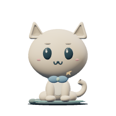
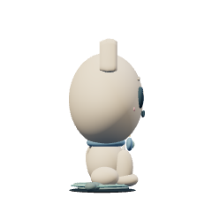
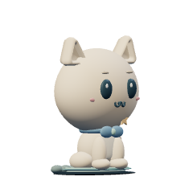
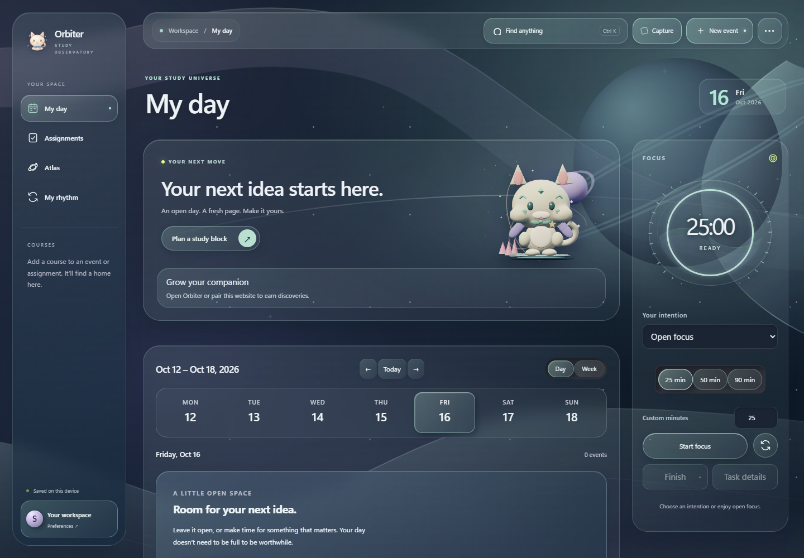
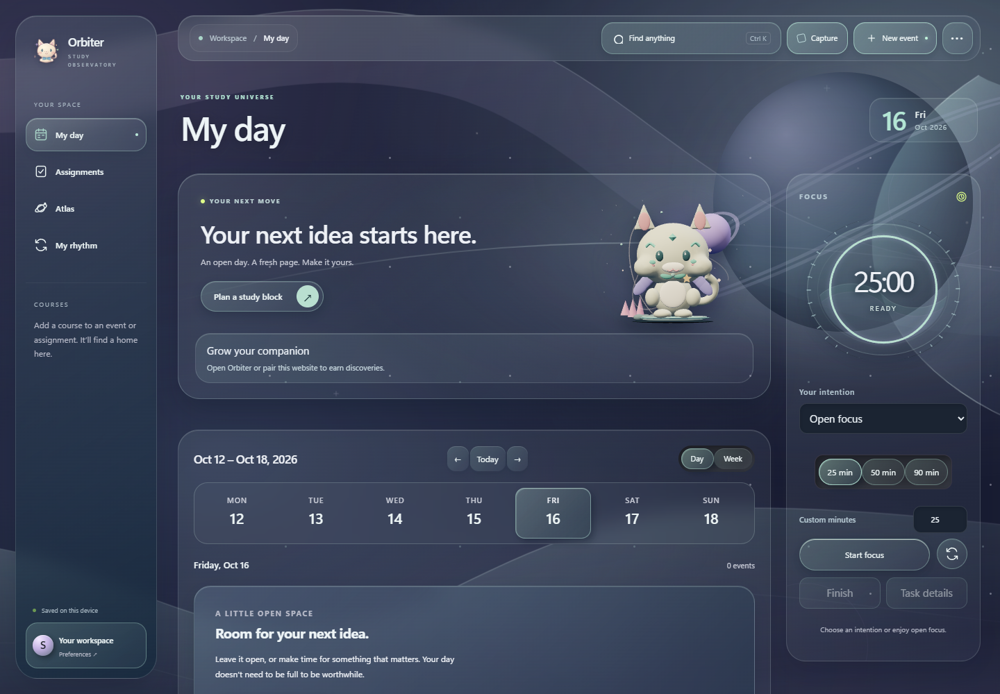
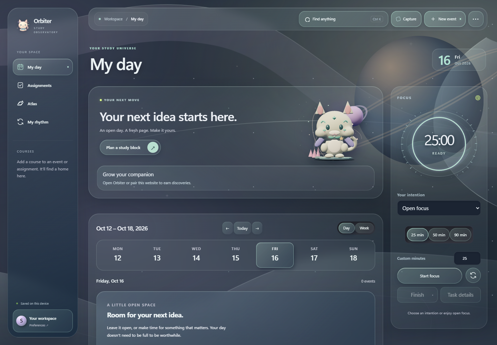

A sculpted collectible kitten, readable at island size. Original model and art; persistent identities remain coat × ears × scarf × charm. Equipment changes the surrounding world.






Editable model and export instructions